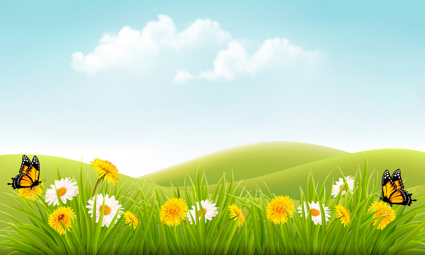

Sahabat yang baik bukan ia yang selalu ada ketika kamu berada di puncak kejayaan, melainkan ketika kamu jatuh dan tersandung dalam keterpurukan.
 Dalam hidup, seringkali manusia merasakan jatuh bangun dan pahit getirnya kehidupan. Ketika manusia berada pada posisi yang sangat terpuruk, tentu saja ia akan sagat membutuhkan dorongan dan semangat untuk bangkit, butuk suara atau semangat dari siapa saja orang terdekatnya. Memang masa – masa sulit akan terasa sangat berat apabila harus di selesaikan sendirian tanpa adanya dukungan dan semangat dari para teman, sahabat dan juga kerabat. Pada posisi yang sangat terpuruk pastinya seseorang akan membutuhkan sebuah Kata kata Bijak yang bisa membuatnya bangkit dan merasa lebih tenang dari sebelumnya.